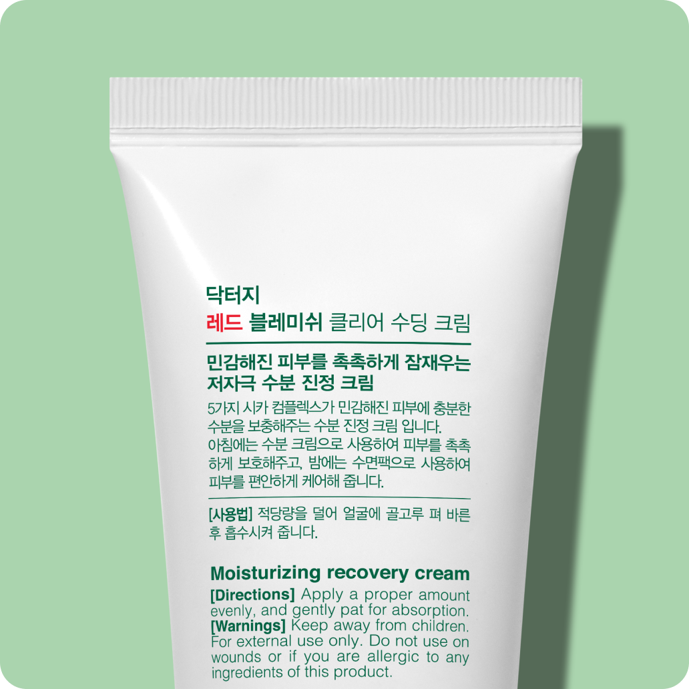

@@include('../../html/include/common/head.html')
@@include('../../html/include/common/header.html')
1:1 성분분석
Dr.G Cosmetic Analysis
제품 업로드/검색
제품명 확인
성분 분석
제품 촬영을 시작합니다.
더 정확한 분석을 위해 아래와 같은 방법으로 진행해주세요!

한글 제품명을
크게 보여주세요.
정면에서
찍어주세요.
초점은 정확하게
맞춰 주세요.
제품 사진 업로드 하기
제품명으로 검색하기
@@include('../../html/include/common/footer.html')